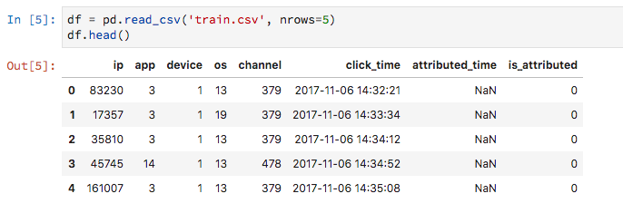

Data Science
April, 2018
At long last, I decided to enter my first Kaggle contest. For the uninitiated, Kaggle hosts predictive, data science competitions. For example, Zillow recently had a contest on Kaggle to better improve their pricing algorithm. Prizes for the competitions can be pretty substantial (the Zillow prize pool was $1.2 million!).
As you can read about in my analysis of their survey, Kaggle is seen as a great resource for learning the tools of data science. I have something of a more mixed review.
About two weeks ago I entered the TalkingData AdTracking Fraud Detection Challenge. According to the competition overview, TalkingData is China’s "largest independent big data service platform," and "covers over 70% of active mobile devices nationwide." The contest is to predict whether a person will download an app after clicking on an ad. They provide 200 million clicks over four days with which to train your model.
That last bit is what makes this competition challenging. The csv file for the training data is over 7.5 gigs (that is A LOT of commas)! Now, this is no BigData, but it's enough to make my little MacBook with a paltry 16 gigs of RAM cough and sputter a bit. What's more, out of all those 200 million clicks, only 0.2% result in a download. This results in a very unbalanced data set, which brings its own challenges.
The competition has been something of a trial-by-fire. I had to learn the Kaggle platform, how to deal with the most raw data I've seen yet, and I had to become familiar with packages like XGBoost and Light GBM. The competition results uses the area-under-the -curve of an ROC plot (more on this in an upcoming post). Roughly, it's a measurement of how accurate your prediction is, taking into account false negative and false positive predictions. A score of 1 is perfect. My current best is sitting at 0.9633. Pretty good right? Ha, wrong! My rank on the leaderboard is 1,244th out of 2196. The current leader has a score of 0.9815. The competition is pretty fierce.
I'm not sure what everyone else is doing that I'm not. I've built several models from scratch and based on what others of posted, but I still can't get any higher. I have a few ideas left, and I'll you know how that goes. But here are some lessons I've learned so far:
I spent a lot of time looking at the data, trying to figure out what might be important. Here's a screen shot of what it looks like:
One of the reasons I chose this competition is the limited number of features (columns). The first five are encoded, meaning that TalkingData knows what they mean by them, but to us they are just categories (i.e. maybe device 1 is an iPhone, maybe app 3 is Chrome). Overall there are just 6 features, with the "is_attributed" column telling us if they downloaded the app or not. There are really only a few new features you can create here. I looked at the total counts for ip, app, os, and channel, and I looked at the mean difference in click_time, thinking that if the clicks are fraudulent, they will happen faster than if a person is doing the clicking. I also included the hour of the day.
But I think this is overboard. As you can learn from reading my post on over-fitting, more features can lead to a low-bias, high-variance model, i.e. I think I've over-fit the training data, so my model does not generalize well to the test data. I'm considering dialing back some of these features to err on the side of simplicity.
I definitely have spent too much time on this. I've learned a lot, yes, but I also spent a week trying to turn my old desktop into a CUDA-powered GPU machine. I got Ubuntu and all my packages installed just fine, but I wanted to go one step further and use the GPU on my old NVIDIA Geforce 760. I tried for hours and hours. No luck. I keep running into problems with the display driver. And this was all in an effort to be able to model faster to get my score higher. That last bit's the rub. Maybe it's more of a personal character flaw, but I wasn't satisfied with just learning cool new tools...I wanted to be in the top 10% at least. I definitely feel that I've neglected my other studies (and probably my kids a bit too). I need to learn to budget my Kaggle time better. Maybe I should walk away with my knowledge and not worry as much about my rank...
I'm super impressed with the help that people offer each other. The discussions are interesting and useful, and so many people post kernels from which you can build your own. They have 16 gigs of RAM at your disposal if you use their servers (i.e. you don't have to have any languages or packages installed on your computer. You can do it all through your browser!). I look forward to doing more competitions, and to using other platforms like DrivenData where competitions are for non-profits.
That's all for now. More coming in part 2!